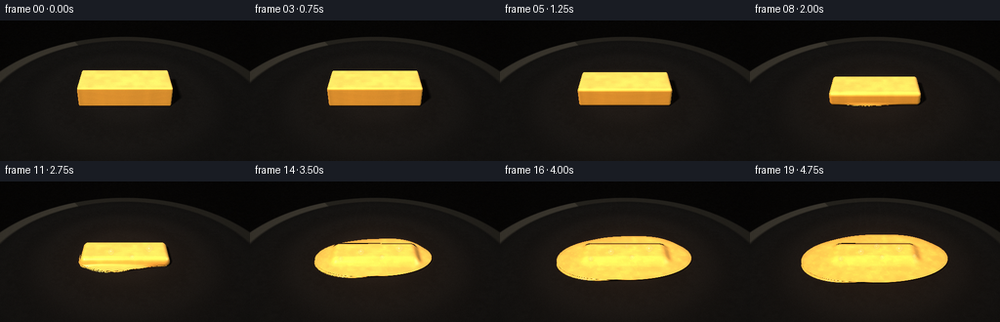
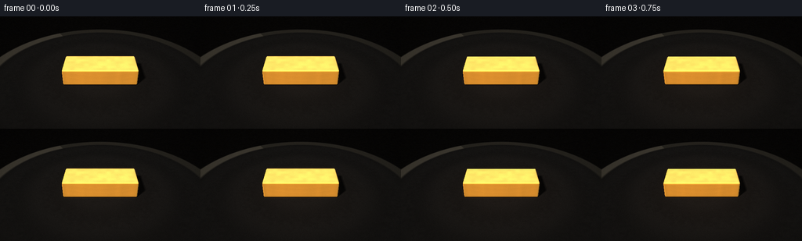
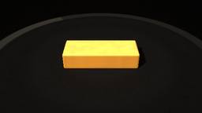
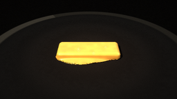
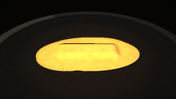
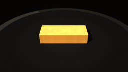
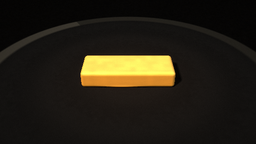
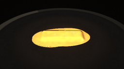
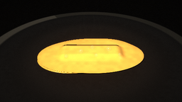

CODING AGENTS AS PIXEL WORLD MODELS
traex/DeepSeek-V4.1-Flash · phygen_098
点击播放 · 原生 RGB 像素
逐轮保存的候选
回放视频、检查图与代码变化。
每份候选均可单独播放。实际图片检查记录在下方工具轨迹中。
候选 01播放与检查图
点击播放 · 原生 RGB 像素


展开代码变化
--- 上一保存版本
+++ 本次保存版本
@@ -0,0 +1,496 @@
+"""Procedural butter-melting timelapse rendered with a small SDF ray marcher."""
+
+from __future__ import annotations
+
+import argparse
+from pathlib import Path
+
+import numpy as np
+from PIL import Image, ImageDraw, ImageFilter
+
+import artifact_io
+
+
+WIDTH = 256
+HEIGHT = 144
+FRAMES = 20
+FPS = 4
+SUPERSAMPLE = 2
+
+
+def norm(v: np.ndarray) -> np.ndarray:
+ return v / np.maximum(np.linalg.norm(v, axis=-1, keepdims=True), 1e-7)
+
+
+def smoothstep(edge0: float, edge1: float, x: np.ndarray | float):
+ x = np.clip((x - edge0) / (edge1 - edge0), 0.0, 1.0)
+ return x * x * (3.0 - 2.0 * x)
+
+
+def hash_noise(x: np.ndarray, y: np.ndarray, z: np.ndarray | float = 0.0) -> np.ndarray:
+ value = np.sin(x * 127.1 + y * 311.7 + z * 74.7) * 43758.5453123
+ return value - np.floor(value)
+
+
+def value_noise(x: np.ndarray, y: np.ndarray, scale: float) -> np.ndarray:
+ """Cheap smooth noise for subtle material variation."""
+ a = hash_noise(np.floor(x / scale), np.floor(y / scale))
+ b = hash_noise(np.floor(x / scale) + 1.0, np.floor(y / scale))
+ c = hash_noise(np.floor(x / scale), np.floor(y / scale) + 1.0)
+ d = hash_noise(np.floor(x / scale) + 1.0, np.floor(y / scale) + 1.0)
+ fx = x / scale - np.floor(x / scale)
+ fy = y / scale - np.floor(y / scale)
+ fx = fx * fx * (3.0 - 2.0 * fx)
+ fy = fy * fy * (3.0 - 2.0 * fy)
+ return (a * (1 - fx) + b * fx) * (1 - fy) + (c * (1 - fx) + d * fx) * fy
+
+
+def sd_round_box(p: np.ndarray, center: np.ndarray, half: np.ndarray, radius: float) -> np.ndarray:
+ q = np.abs(p - center) - np.maximum(half - radius, 0.0)
+ outside = np.linalg.norm(np.maximum(q, 0.0), axis=-1)
+ inside = np.minimum(np.max(q, axis=-1), 0.0)
+ return outside + inside - radius
+
+
+def sd_ellipsoid(p: np.ndarray, center: np.ndarray, radii: np.ndarray) -> np.ndarray:
+ q = (p - center) / radii
+ k0 = np.linalg.norm(q, axis=-1)
+ k1 = np.linalg.norm(q / radii, axis=-1)
+ return k0 * (k0 - 1.0) / np.maximum(k1, 1e-5)
+
+
+def smin(a: np.ndarray, b: np.ndarray, k: float) -> np.ndarray:
+ h = np.clip(0.5 + 0.5 * (b - a) / max(k, 1e-4), 0.0, 1.0)
+ return b * (1.0 - h) + a * h - k * h * (1.0 - h)
+
+
+def melt_params(t: float) -> dict[str, np.ndarray | float]:
+ soft = float(smoothstep(0.03, 1.0, t))
+ slump = float(smoothstep(0.13, 0.92, t))
+ pool = float(smoothstep(0.09, 1.0, t))
+
+ block_half = np.array(
+ [
+ 75.0 * (1.0 - 0.045 * soft),
+ 30.0 * (1.0 - 0.085 * soft),
+ 17.0 * (1.0 - 0.955 * slump) + 0.55,
+ ],
+ dtype=np.float32,
+ )
+ block_center = np.array([0.0, 0.0, float(block_half[2])], dtype=np.float32)
+
+ main_center = np.array([5.0 * soft, 1.0 * soft, 0.0], dtype=np.float32)
+ main_radii = np.array(
+ [
+ 3.0 + 116.0 * pool ** 1.12,
+ 3.0 + 69.0 * pool ** 1.16,
+ 0.35 + 3.65 * pool,
+ ],
+ dtype=np.float32,
+ )
+ main_center[2] = main_radii[2] * 0.84
+
+ lobe_center = np.array([-58.0 * soft, -17.0 * soft, 0.0], dtype=np.float32)
+ lobe_radii = np.array(
+ [
+ 2.0 + 53.0 * pool,
+ 2.0 + 41.0 * pool,
+ 0.28 + 2.62 * pool,
+ ],
+ dtype=np.float32,
+ )
+ lobe_center[2] = lobe_radii[2] * 0.82
+
+ drip_center = np.array([47.0 * soft, 40.0 * soft, 0.0], dtype=np.float32)
+ drip_radii = np.array(
+ [
+ 1.5 + 31.5 * pool,
+ 1.5 + 21.5 * pool,
+ 0.25 + 2.15 * pool,
+ ],
+ dtype=np.float32,
+ )
+ drip_center[2] = drip_radii[2] * 0.8
+
+ return {
+ "block_half": block_half,
+ "block_center": block_center,
+ "block_radius": 2.8 + 10.0 * soft,
+ "main_center": main_center,
+ "main_radii": main_radii,
+ "lobe_center": lobe_center,
+ "lobe_radii": lobe_radii,
+ "drip_center": drip_center,
+ "drip_radii": drip_radii,
+ "blend": 1.0 + 10.0 * soft,
+ "soft": soft,
+ "slump": slump,
+ "pool": pool,
+ }
+
+
+def butter_sdf(p: np.ndarray, params: dict[str, np.ndarray | float]) -> np.ndarray:
+ block = sd_round_box(
+ p,
+ params["block_center"],
+ params["block_half"],
+ float(params["block_radius"]),
+ )
+ pool_a = sd_ellipsoid(p, params["main_center"], params["main_radii"])
+ pool_b = sd_ellipsoid(p, params["lobe_center"], params["lobe_radii"])
+ pool_c = sd_ellipsoid(p, params["drip_center"], params["drip_radii"])
+ pool = smin(pool_a, pool_b, 8.0)
+ pool = smin(pool, pool_c, 6.0)
+ return smin(block, pool, float(params["blend"]))
+
+
+def camera_basis(frame_t: float):
+ cam = np.array([0.0, -355.0, 245.0], dtype=np.float32)
+ target = np.array([0.0, 8.0, 6.0], dtype=np.float32)
+ forward = norm(target - cam)
+ right = norm(np.cross(forward, np.array([0.0, 0.0, 1.0], dtype=np.float32)))
+ up = norm(np.cross(right, forward))
+ return cam, forward, right, up
+
+
+def make_rays(width: int, height: int):
+ cam, forward, right, up = camera_basis(0.0)
+ aspect = width / height
+ tan_v = np.tan(np.deg2rad(15.7))
+ tan_h = tan_v * aspect
+ xs = (np.arange(width, dtype=np.float32) + 0.5) / width * 2.0 - 1.0
+ ys = 1.0 - (np.arange(height, dtype=np.float32) + 0.5) / height * 2.0
+ xx, yy = np.meshgrid(xs, ys)
+ directions = (
+ forward[None, None, :]
+ + xx[..., None] * tan_h * right[None, None, :]
+ + yy[..., None] * tan_v * up[None, None, :]
+ )
+ directions = norm(directions).astype(np.float32)
+ return cam.astype(np.float32), directions, forward, right, up
+
+
+def ray_sphere_intersect(ro: np.ndarray, rd: np.ndarray, center: np.ndarray, radius: float):
+ oc = ro - center
+ b = np.sum(rd * oc, axis=-1)
+ c = np.dot(oc, oc) - radius * radius
+ disc = b * b - c
+ return disc > 0.0
+
+
+def render_scene(t: float, width: int, height: int):
+ params = melt_params(t)
+ cam, directions, forward, right, up = make_rays(width, height)
+ ro = np.broadcast_to(cam, directions.shape)
+ plane_t = -cam[2] / np.minimum(directions[..., 2], -1e-5)
+ plane_t = np.maximum(plane_t, 0.0)
+
+ # Only march rays that can reach the butter's broad bounding sphere.
+ candidate = ray_sphere_intersect(cam, directions, np.array([0.0, 0.0, 34.0]), 180.0)
+ candidate &= plane_t > 3.0
+
+ ray_t = np.full((height, width), 1.0, dtype=np.float32)
+ hit = np.zeros((height, width), dtype=bool)
+ active = candidate.copy()
+
+ for _ in range(96):
+ p = cam[None, None, :] + directions * ray_t[..., None]
+ distance = butter_sdf(p, params)
+ active_hit = active & (distance < 0.075)
+ hit |= active_hit
+ step = np.clip(distance * 0.72, 0.12, 7.0)
+ ray_t = np.where(active, ray_t + step, ray_t)
+ active &= ~active_hit
+ active &= ray_t < np.minimum(plane_t - 0.25, 760.0)
+ if not np.any(active):
+ break
+
+ p_hit = cam[None, None, :] + directions * ray_t[..., None]
+ eps = 0.18
+ nx = (
+ butter_sdf(p_hit + np.array([eps, 0.0, 0.0], dtype=np.float32), params)
+ - butter_sdf(p_hit - np.array([eps, 0.0, 0.0], dtype=np.float32), params)
+ )
+ ny = (
+ butter_sdf(p_hit + np.array([0.0, eps, 0.0], dtype=np.float32), params)
+ - butter_sdf(p_hit - np.array([0.0, eps, 0.0], dtype=np.float32), params)
+ )
+ nz = (
+ butter_sdf(p_hit + np.array([0.0, 0.0, eps], dtype=np.float32), params)
+ - butter_sdf(p_hit - np.array([0.0, 0.0, eps], dtype=np.float32), params)
+ )
+ normals = norm(np.stack([nx, ny, nz], axis=-1))
+
+ light_key = norm(np.array([-0.45, -0.58, 0.78], dtype=np.float32))
+ light_fill = norm(np.array([0.58, -0.14, 0.38], dtype=np.float32))
+ view = -directions
+ ndotv = np.clip(np.sum(normals * view, axis=-1), 0.0, 1.0)
+
+ # Ambient occlusion makes the soft, rounded melt read better.
+ ao = np.ones((height, width), dtype=np.float32)
+ for h in (0.7, 1.4, 2.8, 5.5):
+ probe = p_hit + normals * h
+ ao -= np.clip((h - butter_sdf(probe, params)) / h, 0.0, 1.0) * 0.075
+ ao = np.clip(ao, 0.35, 1.0)
+
+ n_dot_l1 = np.clip(np.sum(normals * light_key, axis=-1), 0.0, 1.0)
+ n_dot_l2 = np.clip(np.sum(normals * light_fill, axis=-1), 0.0, 1.0)
+ half_key = norm(light_key + view)
+ half_fill = norm(light_fill + view)
+ spec_key = np.power(np.clip(np.sum(normals * half_key, axis=-1), 0.0, 1.0), 92.0)
+ spec_fill = np.power(np.clip(np.sum(normals * half_fill, axis=-1), 0.0, 1.0), 28.0)
+ fresnel = np.power(1.0 - ndotv, 2.1)
+
+ px = p_hit[..., 0]
+ py = p_hit[..., 1]
+ pz = p_hit[..., 2]
+ grain = value_noise(px + 19.0, py + 7.0, 9.0) - 0.5
+ fine = hash_noise(px * 0.75, py * 0.75, pz * 0.4) - 0.5
+ facing = np.clip(normals[..., 2] * 0.72 + 0.28, 0.0, 1.0)
+ top_color = np.stack(
+ [
+ np.full_like(px, 1.02),
+ np.full_like(px, 0.83 - 0.055 * t),
+ np.full_like(px, 0.42 - 0.08 * t),
+ ],
+ axis=-1,
+ )
+ side_color = np.stack(
+ [
+ np.full_like(px, 0.91),
+ np.full_like(px, 0.61 - 0.035 * t),
+ np.full_like(px, 0.16 - 0.02 * t),
+ ],
+ axis=-1,
+ )
+ albedo = side_color * (1.0 - facing[..., None]) + top_color * facing[..., None]
+ albedo *= (1.0 + grain[..., None] * 0.09 + fine[..., None] * 0.025)
+
+ butter = albedo * (
+ 0.23
+ + 1.06 * n_dot_l1[..., None] * np.array([1.0, 0.94, 0.82], dtype=np.float32)
+ + 0.27 * n_dot_l2[..., None] * np.array([0.78, 0.86, 1.0], dtype=np.float32)
+ ) * ao[..., None]
+ gloss = float(smoothstep(0.10, 0.88, t))
+ butter += (0.10 + 0.82 * gloss) * spec_key[..., None] * np.array([1.0, 0.93, 0.76], dtype=np.float32)
+ butter += (0.025 + 0.22 * gloss) * spec_fill[..., None] * np.array([0.92, 0.96, 1.0], dtype=np.float32)
+ butter += (0.025 + 0.16 * gloss) * fresnel[..., None] * np.array([0.15, 0.095, 0.025], dtype=np.float32)
+ oil_noise = value_noise(px * 1.5 + py * 0.6, py * 1.7 - px * 0.2, 7.5)
+ oil_bands = smoothstep(0.63, 0.82, oil_noise) * smoothstep(0.22, 0.92, t)
+ butter += oil_bands[..., None] * np.array([0.055, 0.034, 0.006], dtype=np.float32)
+
+ # Warm translucency on thin, sunlit edges.
+ sss = np.clip((1.0 - ao) * (0.35 + n_dot_l1), 0.0, 1.0)
+ butter += sss[..., None] * np.array([0.15, 0.06, 0.008], dtype=np.float32)
+
+ plane_p = cam[None, None, :] + directions * plane_t[..., None]
+ plane_x = plane_p[..., 0]
+ plane_y = plane_p[..., 1]
+ pan_dx = plane_x
+ pan_dy = plane_y - 14.0
+ pan_r = np.sqrt(pan_dx * pan_dx + pan_dy * pan_dy)
+ brush = value_noise(plane_x + 33.0, plane_y - 11.0, 5.5)
+ speck = hash_noise(plane_x * 1.8, plane_y * 1.8, 4.0)
+ ring = 0.5 + 0.5 * np.cos(pan_r * 0.085 + brush * 1.8)
+
+ pan_base = np.stack(
+ [
+ np.full_like(plane_x, 0.060),
+ np.full_like(plane_x, 0.058),
+ np.full_like(plane_x, 0.056),
+ ],
+ axis=-1,
+ )
+ pan_base *= (0.84 + 0.18 * ring[..., None] + 0.08 * brush[..., None])
+ pan_base += (speck[..., None] - 0.5) * 0.014
+ pan_base += np.clip(0.032 - pan_r[..., None] * 0.00008, 0.0, None)
+
+ # A soft heat halo in the pan around the butter.
+ warm_dist = np.sqrt((plane_x - 3.0) ** 2 + (plane_y - 3.0) ** 2)
+ heat_halo = np.exp(-(warm_dist / 132.0) ** 2) * (0.028 + 0.105 * t)
+ pan_base += heat_halo[..., None] * np.array([0.62, 0.28, 0.07], dtype=np.float32)
+
+ rim = smoothstep(232.0, 241.0, pan_r) * (1.0 - smoothstep(260.0, 267.0, pan_r))
+ rim_light = 0.48 + 0.32 * np.clip((-pan_dx * 0.45 - pan_dy * 0.25 + 0.5), 0.0, 1.0)
+ rim_color = np.stack(
+ [
+ np.full_like(plane_x, 0.30 * rim_light),
+ np.full_like(plane_x, 0.285 * rim_light),
+ np.full_like(plane_x, 0.25 * rim_light),
+ ],
+ axis=-1,
+ )
+ pan_base = pan_base * (1.0 - rim[..., None]) + rim_color * rim[..., None]
+
+ outside = smoothstep(260.0, 267.0, pan_r)
+ bg = np.stack(
+ [
+ np.full_like(plane_x, 0.025),
+ np.full_like(plane_x, 0.022),
+ np.full_like(plane_x, 0.020),
+ ],
+ axis=-1,
+ )
+ bg += (brush[..., None] - 0.5) * 0.008
+ pan_color = pan_base * (1.0 - outside[..., None]) + bg * outside[..., None]
+
+ # Soft shadow cast from the butter onto the pan.
+ shadow_origin = plane_p + np.array([0.0, 0.0, 0.55], dtype=np.float32)
+ shadow_t = np.full((height, width), 1.0, dtype=np.float32)
+ shadow = np.ones((height, width), dtype=np.float32)
+ shadow_active = (pan_r < 245.0) & (~hit)
+ for _ in range(44):
+ sp = shadow_origin + light_key[None, None, :] * shadow_t[..., None]
+ sd = butter_sdf(sp, params)
+ shadow = np.where(shadow_active, np.minimum(shadow, np.clip(10.0 * sd / np.maximum(shadow_t, 1.0), 0.0, 1.0)), shadow)
+ shadow_t = np.where(shadow_active, shadow_t + np.maximum(sd * 0.85, 1.0), shadow_t)
+ shadow_active &= (sd > 0.08) & (shadow_t < 180.0)
+ if not np.any(shadow_active):
+ break
+ shadow = np.clip(shadow, 0.0, 1.0)
+
+ plane_normal = np.array([0.0, 0.0, 1.0], dtype=np.float32)
+ plane_view = -directions
+ half_pan = norm(light_key + plane_view)
+ pan_spec = np.power(np.clip(np.sum(half_pan * plane_normal, axis=-1), 0.0, 1.0), 38.0)
+ pan_spec2 = np.power(np.clip(np.sum(half_pan * plane_normal, axis=-1), 0.0, 1.0), 7.0)
+ pan_ndotl = max(float(np.dot(plane_normal, light_key)), 0.0)
+ pan_color *= (0.45 + 0.62 * pan_ndotl) * (0.22 + 0.78 * shadow[..., None])
+ pan_color += pan_spec[..., None] * np.array([0.34, 0.31, 0.24], dtype=np.float32)
+ pan_color += pan_spec2[..., None] * np.array([0.045, 0.040, 0.032], dtype=np.float32)
+
+ color = pan_color * (~hit)[..., None] + butter * hit[..., None]
+
+ # Gentle depth and framing grade.
+ yy, xx = np.mgrid[0:height, 0:width].astype(np.float32)
+ u = (xx + 0.5) / width * 2.0 - 1.0
+ v = (yy + 0.5) / height * 2.0 - 1.0
+ vignette = 1.0 - 0.29 * np.clip((u * u * 0.58 + v * v * 0.42), 0.0, 1.0)
+ color *= vignette[..., None]
+ color = np.maximum(color, 0.0)
+ color = np.power(color, 0.94)
+ color *= np.array([1.025, 1.0, 0.965], dtype=np.float32)
+
+ return np.clip(color, 0.0, 1.0).astype(np.float32), hit
+
+
+def project_points(points: np.ndarray, width: int, height: int) -> np.ndarray:
+ cam, forward, right, up = camera_basis(0.0)
+ aspect = width / height
+ tan_v = np.tan(np.deg2rad(15.7))
+ tan_h = tan_v * aspect
+ rel = points - cam
+ depth = np.maximum(np.sum(rel * forward, axis=-1), 1e-5)
+ sx = (np.sum(rel * right, axis=-1) / (depth * tan_h) * 0.5 + 0.5) * width
+ sy = (0.5 - np.sum(rel * up, axis=-1) / (depth * tan_v) * 0.5) * height
+ return np.stack([sx, sy], axis=-1)
+
+
+def add_steam_and_bubbles(image: Image.Image, t: float, hit: np.ndarray, frame_index: int) -> Image.Image:
+ width, height = image.size
+ overlay = Image.new("RGBA", (width, height), (0, 0, 0, 0))
+ draw = ImageDraw.Draw(overlay)
+
+ if t > 0.34:
+ strength = float(smoothstep(0.34, 0.95, t))
+ cx = width * 0.49
+ base_y = height * 0.40
+ for wisp in range(4):
+ phase = frame_index * 0.62 + wisp * 1.7
+ x0 = cx + (wisp - 1.5) * width * 0.038
+ points = []
+ for step in range(13):
+ q = step / 12.0
+ y = base_y - q * height * (0.27 + 0.06 * (wisp % 2))
+ x = x0 + np.sin(phase + q * 5.1 + wisp * 0.9) * (3.0 + 4.0 * q) * (width / 512.0)
+ points.append((float(x), float(y)))
+ alpha = int((4.0 + 9.0 * strength) * (1.0 - 0.08 * wisp))
+ draw.line(points, fill=(255, 241, 211, alpha), width=max(2, int(2.2 * width / 512)))
+ overlay = overlay.filter(ImageFilter.GaussianBlur(2.1 * width / 512))
+ image = Image.alpha_composite(image.convert("RGBA"), overlay).convert("RGB")
+
+ # Tiny glints and bubbles appear as the butter turns into a glossy pool.
+ if t > 0.50:
+ bubbles = [
+ (-24.0, 9.0, 4.3, 0.10),
+ (12.0, -8.0, 3.2, 0.28),
+ (43.0, 19.0, 4.8, 0.46),
+ (-57.0, -13.0, 3.5, 0.62),
+ (3.0, 26.0, 3.9, 0.78),
+ (67.0, -5.0, 2.9, 0.89),
+ ]
+ top_z = 5.5
+ pts = np.array([[x, y, top_z] for x, y, _, _ in bubbles], dtype=np.float32)
+ screen = project_points(pts, width, height)
+ bubble_layer = Image.new("RGBA", (width, height), (0, 0, 0, 0))
+ bdraw = ImageDraw.Draw(bubble_layer)
+ for (_, _, radius, phase), (sx, sy) in zip(bubbles, screen):
+ local_t = float(smoothstep(phase, phase + 0.13, t))
+ if local_t <= 0.0:
+ continue
+ px = int(round(sx))
+ py = int(round(sy))
+ if not (0 <= px < width and 0 <= py < height) or not hit[min(py, height - 1), min(px, width - 1)]:
+ continue
+ r = radius * width / 512.0 * (0.55 + 0.65 * local_t)
+ alpha = int(105 * local_t)
+ bdraw.ellipse((sx - r, sy - r, sx + r, sy + r), fill=(255, 232, 155, alpha // 3), outline=(255, 249, 217, alpha), width=max(1, int(width / 512)))
+ bdraw.ellipse((sx - r * 0.38, sy - r * 0.38, sx + r * 0.12, sy + r * 0.12), fill=(255, 255, 239, alpha))
+ bubble_layer = bubble_layer.filter(ImageFilter.GaussianBlur(0.42 * width / 512))
+ image = Image.alpha_composite(image.convert("RGBA"), bubble_layer).convert("RGB")
+
+ return image
+
+
+def postprocess(rgb: np.ndarray, t: float, hit: np.ndarray, frame_index: int) -> np.ndarray:
+ image = Image.fromarray(np.clip(rgb * 255.0, 0.0, 255.0).astype(np.uint8))
+ image = add_steam_and_bubbles(image, t, hit, frame_index)
+
+ # Subtle bloom on the butter's oily highlights.
+ arr = np.asarray(image, dtype=np.float32) / 255.0
+ bright = np.clip((arr - 0.56) * 1.8, 0.0, 1.0)
+ bright_img = Image.fromarray((bright * 255.0).astype(np.uint8))
+ bright_img = bright_img.filter(ImageFilter.GaussianBlur(3.0))
+ bloom = np.asarray(bright_img, dtype=np.float32) / 255.0
+ arr = np.clip(arr + bloom * 0.085, 0.0, 1.0)
+
+ # Fine, deterministic sensor grain.
+ yy, xx = np.mgrid[0:arr.shape[0], 0:arr.shape[1]].astype(np.float32)
+ grain = hash_noise(xx * 0.37 + frame_index * 7.1, yy * 0.41 - frame_index * 3.7) - 0.5
+ arr = np.clip(arr + grain[..., None] * 0.010, 0.0, 1.0)
+ return arr
+
+
+def render_frame(frame_index: int, width: int, height: int) -> np.ndarray:
+ t = frame_index / (FRAMES - 1)
+ rgb, hit = render_scene(t, width, height)
+ rgb = postprocess(rgb, t, hit, frame_index)
+ image = Image.fromarray(np.clip(rgb * 255.0, 0.0, 255.0).astype(np.uint8))
+ image = image.resize((WIDTH, HEIGHT), Image.Resampling.LANCZOS)
+ return np.asarray(image, dtype=np.uint8)
+
+
+def main() -> None:
+ parser = argparse.ArgumentParser()
+ parser.add_argument("--preview", type=int, nargs="*", default=None)
+ parser.add_argument("--out-dir", type=Path, default=Path(".tmp"))
+ args = parser.parse_args()
+
+ if args.preview is not None:
+ args.out_dir.mkdir(parents=True, exist_ok=True)
+ for index in args.preview:
+ frame = render_frame(index, WIDTH * SUPERSAMPLE, HEIGHT * SUPERSAMPLE)
+ Image.fromarray(frame).save(args.out_dir / f"preview_{index:02d}.png")
+ return
+
+ frames = []
+ for index in range(FRAMES):
+ frame = render_frame(index, WIDTH * SUPERSAMPLE, HEIGHT * SUPERSAMPLE)
+ frames.append(frame)
+ print(f"rendered frame {index + 1}/{FRAMES}", flush=True)
+
+ artifact_io.save(np.stack(frames), Path(__file__).resolve().parent)
+
+
+if __name__ == "__main__":
+ main()
可观测工具轨迹
实际执行的命令与返回图片。
命令 1exit 0
/bin/bash -c "pwd && rg --files -g 'prompt.txt' -g 'GENERATION_RULES.md' -g 'task_spec.json' -g '"'!**/.git/**'"'"
命令 2exit 0
/bin/bash -c 'ls -la'
命令 3exit 0
/bin/bash -c 'cat prompt.txt'
命令 4exit 0
/bin/bash -c 'cat GENERATION_RULES.md'
命令 5exit 0
/bin/bash -c 'cat task_spec.json'
命令 6exit 0
/bin/bash -c "sed -n '1,240p' artifact_io.py"
命令 7exit 0
/bin/bash -c 'python generate.py --preview 0 10 19'
命令 8exit 0
/bin/bash -c 'python generate.py --preview 0 7 14 19'
命令 9exit 0
/bin/bash -c 'python generate.py'
命令 10exit 0
/bin/bash -c "python - <<'PY'
from pathlib import Path
import json
import numpy as np
from PIL import Image
p=Path('.')
spec=json.loads((p/'task_spec.json').read_text())
z=np.load(p/'pixels.npz')['pixels']
files=sorted((p/'frames').glob('*.png'))
print('spec', spec)
print('pixels', z.shape, z.dtype, 'range', int(z.min()), int(z.max()))
print('frames', len(files), 'first_last', files[0].name, files[-1].name)
print('index.html', (p/'index.html').stat().st_size, 'inspection', Image.open(p/'inspection.png').size)
# Adjacent-frame differences catch accidental static or discontinuities.
a=np.stack([np.asarray(Image.open(f), dtype=np.int16) for f in files])
d=np.abs(np.diff(a, axis=0)).mean(axis=(1,2,3))
print('adjacent_mean_abs_diff', np.round(d, 3).tolist())
print('mean_diff', round(float(d.mean()),3), 'max_diff', round(float(d.max()),3))
PY"命令 11exit 0
/bin/bash -c "rg -n '__ID__|__DATA__' index.html || true"
命令 12exit 0
/bin/bash -c 'du -h pixels.npz index.html frames inspection.png generate.py'
命令 13exit 0
/bin/bash -c 'python -m py_compile generate.py'
视觉工具实际返回图片 1

视觉工具实际返回图片 2

视觉工具实际返回图片 3

视觉工具实际返回图片 4

视觉工具实际返回图片 5

视觉工具实际返回图片 6

视觉工具实际返回图片 7

视觉工具实际返回图片 8

视觉工具实际返回图片 9

保存候选 1 份；完成命令 13 次；可验证图片返回 9 张。原始 API 响应与完整日志保留在本地。